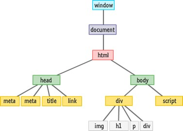
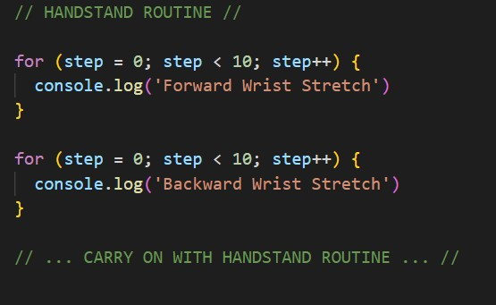
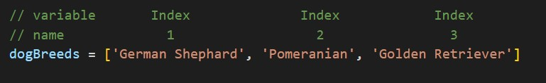
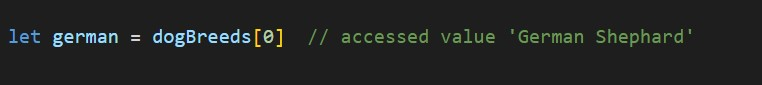
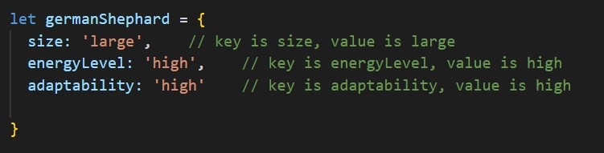
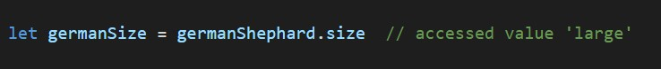
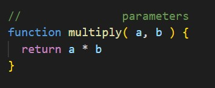

Javascript Fundamentals
What is DOM and how it relates to HTML, CSS and Javascript
First of all what is HTML? HTML defines structure of a web page. Let’s use a car as an analogy: HTML represents the different parts of the car like wheels, mirror, exhaust pipe, shade roof. In terms of a web page, this includes element tags such as p, div, head, body, main that make up a complete web page.
How about CSS? HTML is plain by itself and CSS steps in to provide the appearance and styling for it. The representation of CSS in a car would be changing the wheels to have black rims, tinted mirrors, exposed exhaust pipes and the colour of the car’s body. In a web page, you can make a particular word red in colour or bold, size certain images to fit and much more.
Javascript deals with user interactivity within a web page, breathing life into it. Coming back to the car analogy, Javascript can be represented as the accelerator to move the wheel forwards. With a web page, we can utilise Javascript to make a music play when it reaches a particular section of the page document or make an element change its colour with a button click.
So how do we make these integrate with each other? The glue that holds these together is the Document Object Model (DOM). Let’s delve into what the Document Object Model is! Exciting!
Let us kick off with a very simplified view below of DOM to better our understanding. Essentially, it is a representation or interface of a web page so that external programs can manipulate the document structure, style and content. Javascript language is commonly utilised to navigate through the DOM and access the document and its elements.
What is control flow and loops?
Control flow is the order in which the computer executes statements in a script. To make it easier to understand, let’s take my daily morning routine as an example (for you to get to know me better)! Every morning I carry out the following:
- Wake up at 7 a.m. (or at least try to LOL)
- Do my morning stretches and handstand routine
- Carry out 5 minute meditation
- Take a shower
- Plan out my goal and challenge for the day
- Begin learning coding!
This is done in sequence from Step 1 to Step 6, similarly to how a code is run from the first line in the file to the last line. There are however exceptions that can change the control flow, such as conditionals and loops.
Loop is a structure that offer a neat and quick way of doing something repeatedly. Let’s go back to my morning routine as an example. In my handstand routine, there are different actions I carry out repeatedly:
- Forward wrist stretch x 10
- Backward wrist stretch x 10
- L-shape handstand x 3
- Wall handstand x 3
- Thigh stretch x 10
- Off-wall handstand x 3
In code, I am able repeat an action multiple times utilising loop without having to re-writing the code repeatedly. See below as how my handstand routine can be represented as a loop code.
Difference between accessing data from arrays and objects
Array
Array enables the storing of multiple items under a single variable name. The variable name provides a description of what the group of data being stored is.
An example of an array is:
Each value in an array is assigned an Index Value (see green note in picture). To access the specific values in an array, we utilise the associated index value. For example:
Object
An object is also a list but it introduces a collection of unique and in-depth values tied to what the object signifies. Each of the values have a ‘key’ (unique description) tied to it.
An example of an object is:
To access a value of an object, we first use the name of the object paired with the ‘key’ of the value we want to access. For example:
Functions and why they are helpful!
A function is a set of instructions designed for a specific task. To execute the given instructions, it needs to be called upon in the code.
The above is an example of a function multiplying two numbers together. It takes in two different inputs (known as parameters).The output of the function is the result of the instruction written in it, in this case the multiplication of both input numbers.
The use of functions is easily comparable to a tool like a hammer. Once bought in this case the function made, the tool can be utilised to its intended purpose when it is CALLED upon!